1登入、進考勤管理
電腦、手機都可以用。手機建議把網址加到主畫面。
登入
- 打開 dzy.mozhuting.com。
- 帳號填你的同仁編號（DZY 開頭），再填密碼，按 登入。
- 忘記密碼：按登入鈕下面的「用 LINE 重設密碼」。
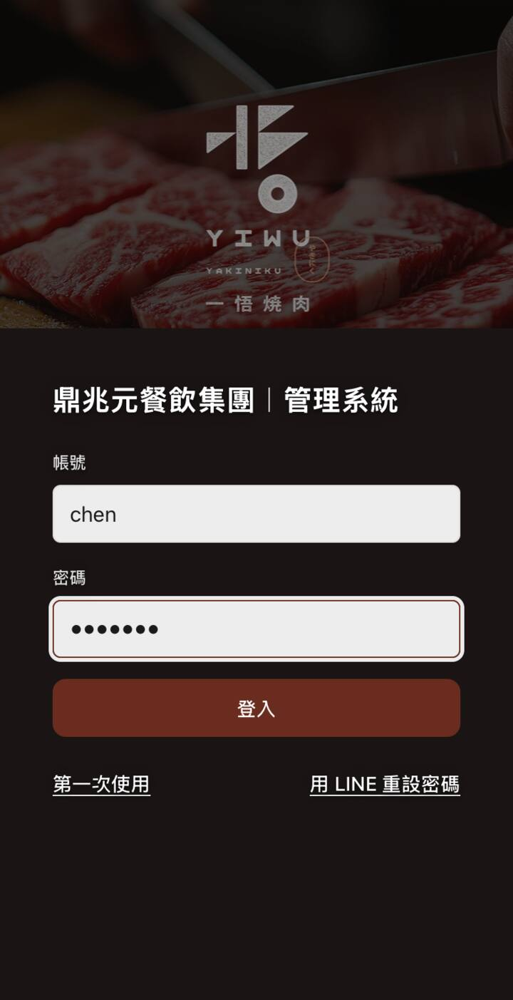
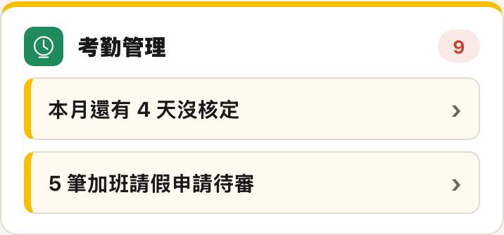
從首頁直接點進去
登入後首頁會列出待辦。考勤管理那一格會寫：
- 本月還有 N 天沒核定：點了直接到核定工時。
- N 筆加班請假申請待審：點了直接到申請審核。
右上角紅色數字＝兩種加起來還有幾件。
從選單進去
電腦：左邊選單「人資部門」底下的 考勤管理。手機：上方那排圖示往左滑，找到「考勤管理」。
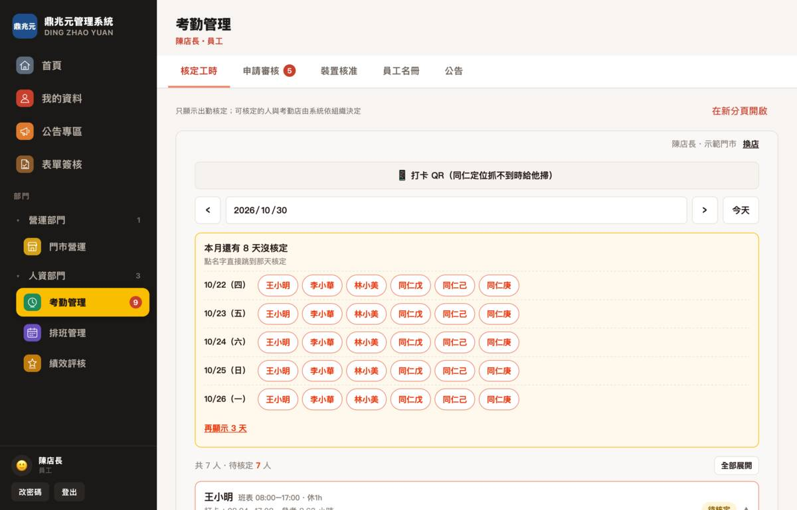
管兩家以上的店：先選門市
第一次進來會問你要進哪家店，點一家就好。
要換別家：畫面右上「你的名字・門市名」旁邊的 換店。
只管一家店的人不會看到這一頁，直接進去。
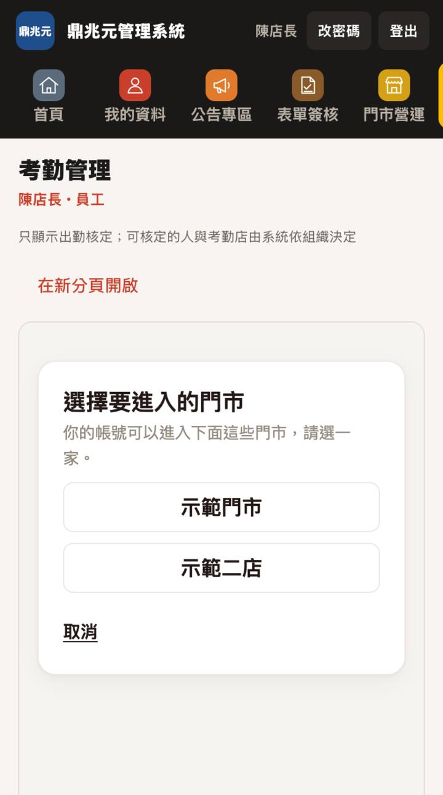
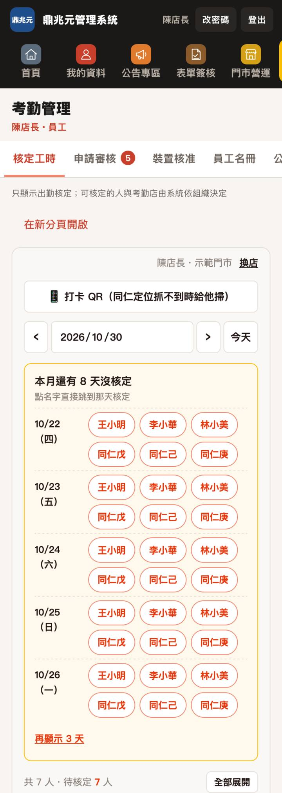
換日期
- ‹ ›：前一天、後一天。
- 點中間的日期可以直接選一天；今天 回到今天。
- 黃色框「本月還有 N 天沒核定」把還沒核的人按日期排好，點名字就跳到那天。每天從這裡開始最快。
上方分頁
核定工時、申請審核（紅色數字＝待審幾筆）、裝置核准、員工名冊、公告。這份手冊講前兩個。
2核定工時
每天每位同仁一張卡。看打卡、對班表、確認時段，按送出。核定的時數就是算薪水的時數。
先看卡片上面三行
| 班表 08:00–17:00 | 名字旁的小字。照排班帶出來；沒排班會寫「預設」。 |
|---|---|
| 打卡 | 同仁實際打的上下班時間，和系統算的參考時數。 |
| 班表：早班… | 拿打卡跟班表比。差超過 15 分鐘會標橘色晚到 N 分或早退 N 分。 |
橘色標籤只是提醒，不會擋你送出。遲到由系統依核定時數自動判定；如果同仁是因公或特殊狀況晚到、不算遲到，就在下面「遲到分鐘」填 0，這位同仁就不算遲到。
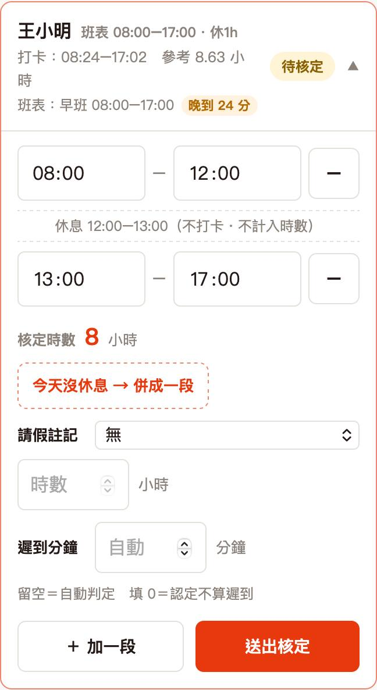
確認上下班時段
- 系統會先照班表或打卡幫你填好時段。對照打卡看一下對不對，不對就直接改時間。
- 中間有休息的店，休息時間會自動切開，不算時數。那天真的沒休息，按 今天沒休息 → 併成一段。
- 多段班（例如中午、晚上各上一段）：一段一列。不夠按 ＋ 加一段，多的按右邊 － 刪掉。
- 「核定時數」會跟著自動算，送出前看一眼。
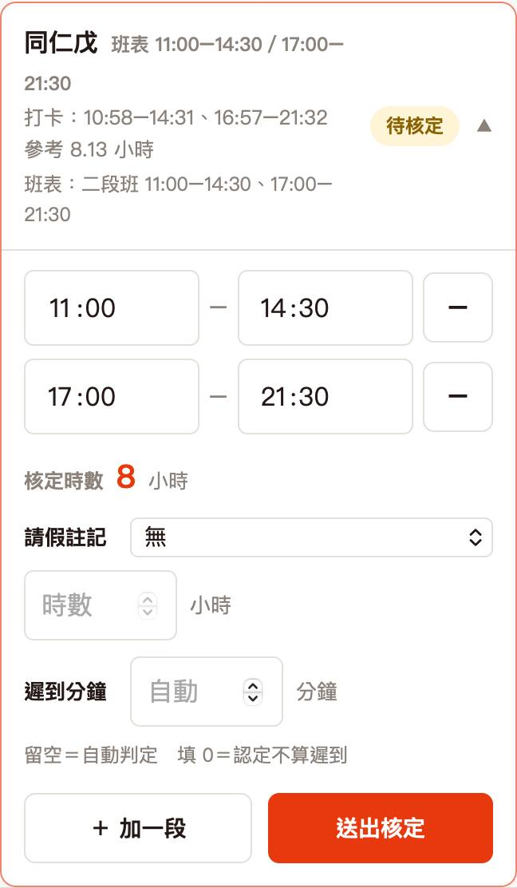
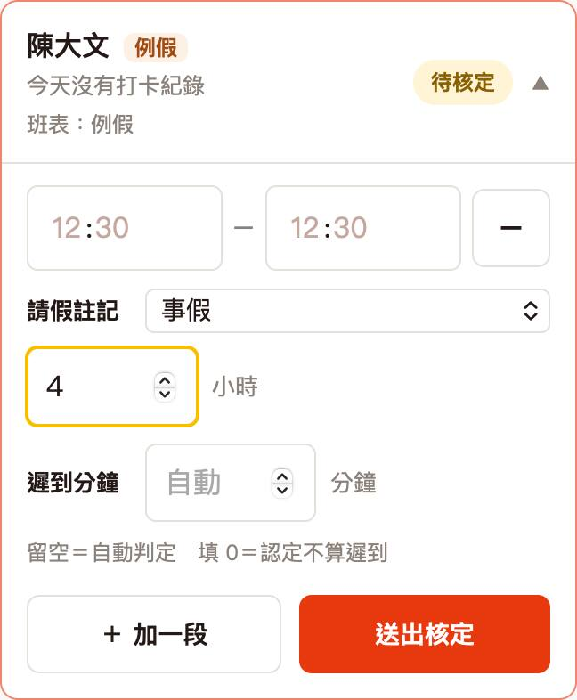
請假註記、遲到分鐘
- 請假註記：同仁那天有請假，選假別、填幾小時。已經用完額度的假別會反灰。整天請假可以不填上班時段。
- 遲到分鐘：留空＝系統自動判斷；填 0＝你認定不算遲到；填數字＝認定遲到幾分鐘。
- 同仁已經送過請假單、你也核准了，這裡會自動帶好，不用重打。
出差怎麼填
- 「請假註記」選 出差。
- 後面填出差幾小時。填幾小時就核定幾小時，會跟上面的上班時段加在一起。
- 出差那段不要再填進上班時段，不然會算兩次。
- 整天出差：把上班時段那列按 － 刪掉，只填出差時數。
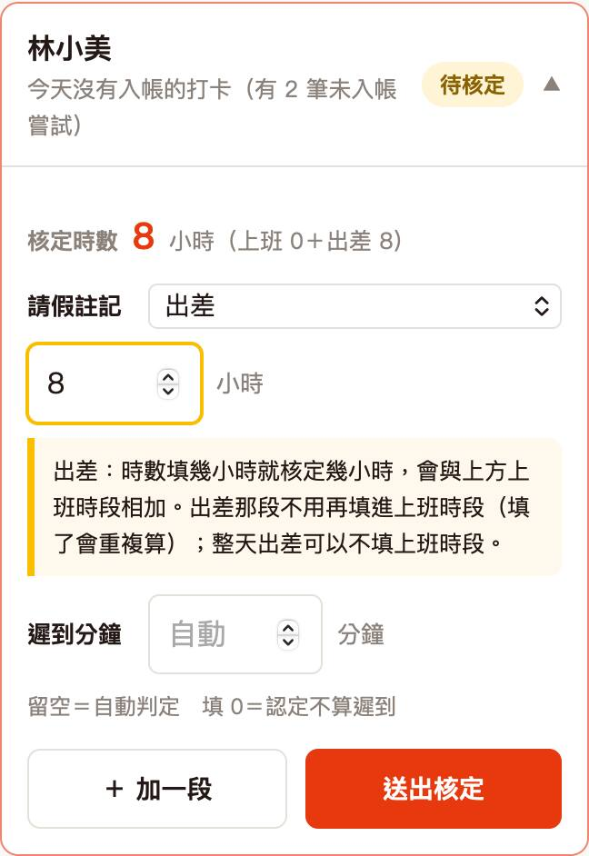
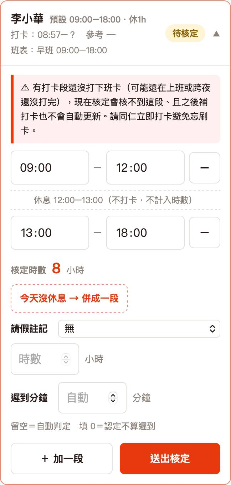
紅色「還沒打下班卡」
卡片出現紅框寫「有打卡段還沒打下班卡」，意思是：
- 同仁打了上班卡，還沒打下班卡。可能還在上班，也可能忘了打。
- 現在核定，這段核不到；之後同仁補打卡，也不會自動更新。
怎麼做：人還在店裡就等他下班打完再核。已經走了，請他馬上打卡；打不了就請他送「忘打卡」申請（見第 3、5 段）。
送出、改錯重送
- 按 送出核定，會跳出確認框列出時段和時數，沒問題按 送出。
- 成功會出現綠色「✓ 已核定 N 小時」，卡片自動收起，換下一位。
- 發現填錯：點開那張卡，改好後按 重新送出核定。以最後一次送出的為準。
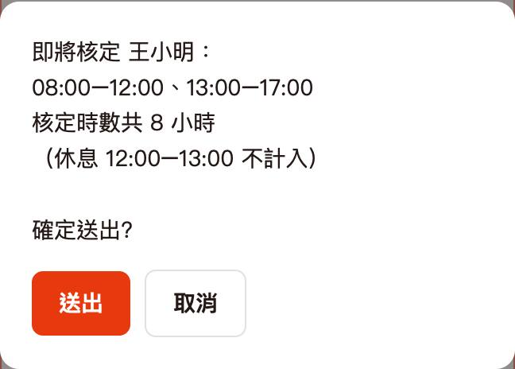
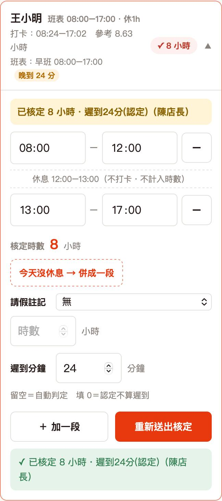
3申請審核
同仁從 LINE 送的加班、請假、忘打卡、出差單都在這裡。最舊的排在最上面。
每一筆看什麼
- 左上標籤：請假、加班、出差、忘打卡。補休是請假的一種，會多一行「補休餘額：N 小時」。
- 內容、原因、送出時間。
- 當天打卡紀錄：那天同仁實際按了什麼。忘打卡單特別要看這裡（第 5 段有說怎麼看）。
- 有附照片或文件會有 看附件。
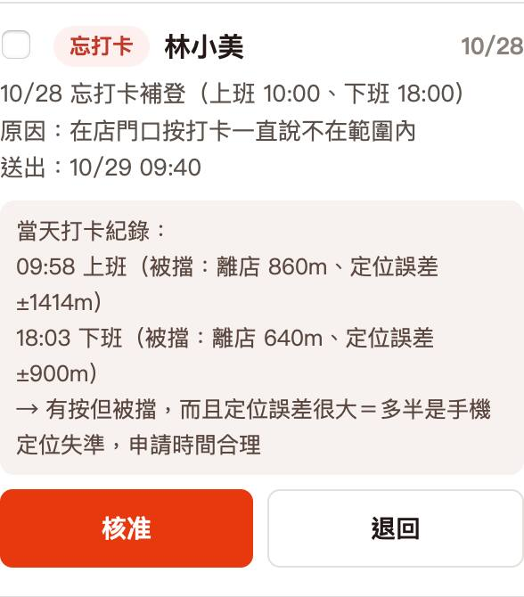
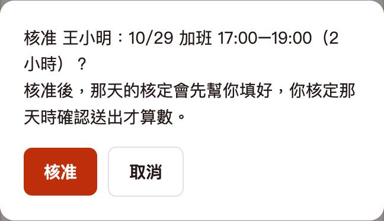
核准
- 按 核准，確認框再按一次 核准。
- 出現「✓ 已核准」就好了。
退回一定要寫理由
- 按 退回，下面會跑出理由欄。
- 寫理由（最多 100 字），按 確定退回。
- 理由會原文給同仁看，請寫清楚他要怎麼改。沒寫會提示「請寫退回理由」。
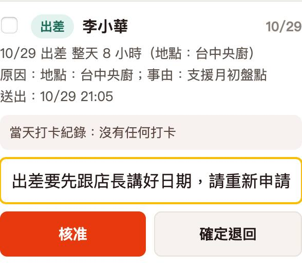
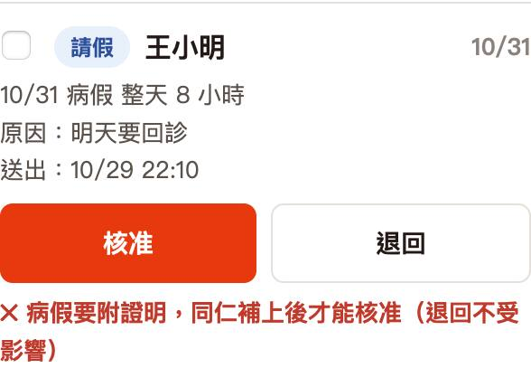
要附證明的假，沒附就不能核准
病假、住院傷病假、公傷病假、婚假、喪假、產假、流產假、產檢假、陪產檢及陪產假、安胎休養假，同仁要附證明。
還沒附的單，按核准會跳紅字「病假要附證明，同仁補上後才能核准」。請同仁補上附件，再來核准。退回不受影響。
一次核准好幾筆
- 勾每一筆左邊的框，或勾「全選」。
- 按 核准勾選的 N 筆，確認後一次核准。
一次最多 30 筆。只能一起核准，不能一起退回，退回請一筆一筆來。已經被處理過的會自動略過，畫面會寫原因。
同一天有好幾張單
同一位同仁同一天核准了好幾張（例如加班＋忘打卡、或同一件事送了兩次），到「核定工時」那天系統不會自己填，會用一個框把每張單逐張列出來。比較舊、可能被新單取代的那張會標「可能是舊單」。
- 對一下哪張才是對的。每張單旁邊有兩顆鈕：依這張填、作廢。
- 舊的、重複的那張按 作廢，寫作廢理由（必填）再送出，那張就不算了。
- 剩下的單如果是不同假別（例如上午事假、下午病假），系統會自動填成好幾列。一天最多記 4 種假別。
- 只想照其中一張填，就按那張的 依這張填。
- 時段和假別對了，再按 送出核定。
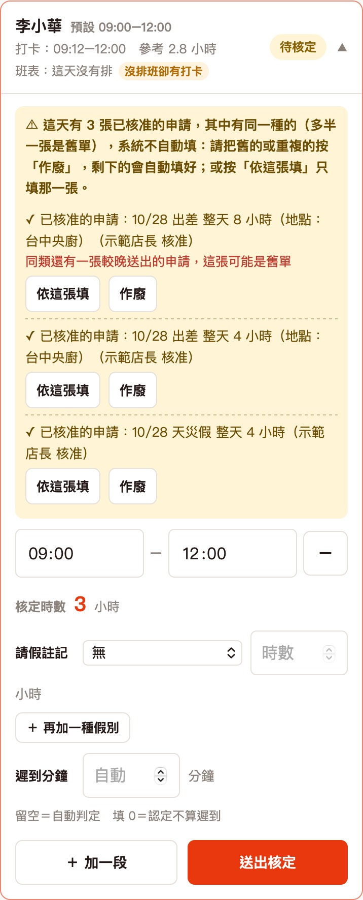
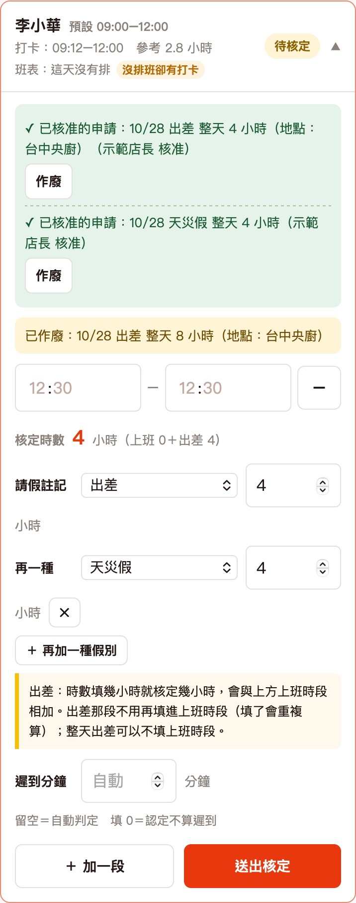
4值班主管本人的單（10/30 起）
規則很簡單：沒有人核自己的申請。
- 你自己的單會放在「申請審核」最下面「我自己送出的」，標「送上層審核中」。核准、退回、作廢的按鈕都按不下去，這是正常的。
- 這些單不算進申請審核的紅色數字，也不會出現在首頁待辦。
- 上層主管會在他們的考勤管理裡看到，標「值班主管本人」。區督導、總監可以核准、退回，也可以作廢。
- 上面都沒有人的店，由人資主管審。
- 你自己的工時照舊自己核，在「核定工時」跟同仁一樣處理。
- 單子狀態：在 LINE 按圖文選單的「加班請假」，打開卡片後切到「我的申請」看。
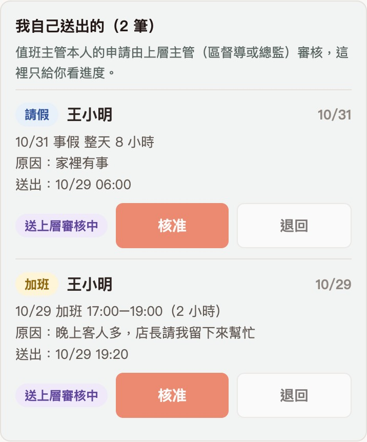
5常見狀況
同仁忘了打卡
- 請他在 LINE 按圖文選單的「加班請假」，機器人會回一張卡片；打開後切到「忘打卡」那一頁，填實際上下班時間和原因送出。
- 你在「申請審核」核准。
- 到「核定工時」那天，時段已經帶好，確認後送出。
不要自己在核定工時直接補時間了事。有申請單，薪資和人資查得到原因。
跨店支援的同仁
- 同仁到別家店支援打卡，那幾天的工時和申請都由支援的那家店核。卡片會標「支援（原單位）」。
- 你店裡的人去別店支援，你只看得到、不能改。有問題請跟那家店的店長說。
打卡一直說「不在範圍內」
看忘打卡單的「當天打卡紀錄」。如果寫「被擋：離店 860m、定位誤差 ±1414m」這種很大的誤差，系統會加一句「多半是手機定位失準，申請時間合理」。這種可以放心核准。
請同仁照下面設定，之後就不太會再發生：
| iPhone | 設定 → 隱私權與安全性 → 定位服務 → LINE：選「使用 App 期間」，打開「準確位置」。 |
|---|---|
| Android | 設定 → 位置：打開定位，打開「Google 定位精確度」（有的手機叫「提高精確度」）；LINE 的位置權限選「精確」。 |
| 兩種都要 | 打開 Wi-Fi（不用連上，開著就會定位比較準）。在店裡靠門口或窗邊再打一次。 |
人就在店裡還是打不了：按核定工時上方的 📱 打卡 QR，讓他用 LINE 掃，掃完直接按上班／下班。QR 每 30 秒換一次。
畫面跟這份手冊不一樣
先在電腦按 Cmd＋Shift＋R（Windows 按 Ctrl＋F5）重新整理，手機把網頁關掉重開。還是不對，截圖傳給資訊部。
本手冊截圖全部用示範資料拍的：門市（示範門市、示範二店）、同仁姓名、日期都是假的，不是任何一家店的真實資料。